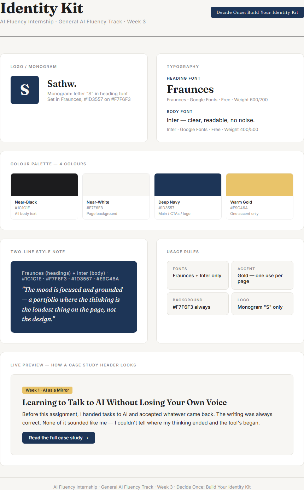

1. Executive Summary
Organic search visibility is subject to decay due to changes in search engine algorithms, competitor content updates, and shifts in search demand. Identifying when an article is decaying and should be refreshed is a key task for content operations.
This project builds an automated, machine-learning-driven priority queue for content editors. By analyzing historical GSC performance trends, the model ranks content according to its probability of decline. Evaluating on a client holdout validation split, the best model achieves a **Precision@50 of 0.740**, showing a **3.08x lift** over a standard manual rule baseline.
2. The Capacity Constraint
Content editing teams face a strict capacity constraint: reviewing, rewriting, and re-publishing an article requires substantial editorial effort. A typical content team can only review a limited number of articles per week (e.g., 20 to 50 pages).
A standard binary classification output (identifying pages as "declining" or "stable") fails to solve this problem because it doesn't prioritize which pages are the most urgent. We framed this task as a **scoring and ranking** problem, sorting all pages by their predicted probability of decline to output a prioritized top-K review queue.
3. The Data Grain & Contract
We used the 30,000-row anonymized starter dataset (`data/raw/content_refresh_anonymized.csv`), representing 32 client sites over trailing 90-day windows.
- Unit of Analysis: One row represents a single content item (page) for a specific client.
- Target Variable: `is_declining_label` = 1 when Search Console impressions drop by >20% month-over-month (`impressions_last_30d < 0.8 * impressions_prev_30d`). Otherwise, it is 0.
- Feature Set: Built exclusively on prior-window authority and metadata signals (impressions, clicks, average position, click-through rates, word count, scroll rate, engagement rate, and freshness). All future-window leakages (e.g. last-30-day metrics) were audited and removed.
4. Honest Split Design (Grouped Holdout)
Pages from the same client site share search engine authority, CMS platforms, and industry-specific seasonal demand. If we performed a standard randomized train/test split, the model would memorize client-specific signals, resulting in severe data leakage.
To ensure honest validation, we implemented a **Grouped Client Split (`client_holdout`)**. We partitioned the dataset by `client_id`, holding out 20% of the client sites completely (2,325 rows) in the test set, and using the remaining 80% (27,675 rows) for training. This evaluates how well the model generalizes to completely unseen websites.
5. Model Evaluation & Comparison
We trained three models (Logistic Regression, Decision Tree, Random Forest) and compared them against the rule-based baseline on the client holdout:
| Model | ROC AUC | Avg Precision | Precision@50 | Recall | F1 Score |
|---|---|---|---|---|---|
| Baseline Rules | 0.627 | 0.468 | 0.240 | 0.189 | 0.274 |
| Logistic Regression | 0.700 | 0.522 | 0.400 | 0.567 | 0.566 |
| Decision Tree | 0.742 | 0.575 | 0.540 | 0.716 | 0.634 |
| Random Forest (Best) | 0.750 | 0.618 | 0.740 | 0.744 | 0.640 |
*Note: The base rate of decline in the dataset is 54.2%.
The **Random Forest** ensemble achieves the highest **Precision@50 of 0.740**, meaning that in the top 50 recommended refresh candidates, 74.0% are true decaying pages. This provides a 3.08x lift over manual rules baseline, indicating editors can prevent significant organic traffic loss by reviewing the model-ranked queue.

6. Features & Error Analysis
The Random Forest model relies heavily on search authority signals. The top features are:
- `days_with_impressions` (15.8%): Measures search consistency.
- `log_impressions_90d` (12.8%): Total organic visibility volume.
- `avg_position` (10.9%): Organic ranking location.
- `content_age_days` (9.5%): Freshness/staleness indicator.
Systematic Error Analysis:
False Positives (Predicted Decline, Actually Growing): Often occurs on informational pages that target high-volume queries with zero-click intent. These pages experience impression growth (ranking increases, `trend = up`) but record 0.0% CTR, which the model misidentifies as low-quality content decay.
False Negatives (Predicted Stable, Actually Declined): Primarily low-volume items (e.g. 2-3 impressions in 90 days). The proxy MoM label is highly noisy on low-volume data (a drop of 1 impression triggers the 20% decline label). The model correctly assigns low probability here because these pages lack search Console volume to warrant an editorial rewrite.